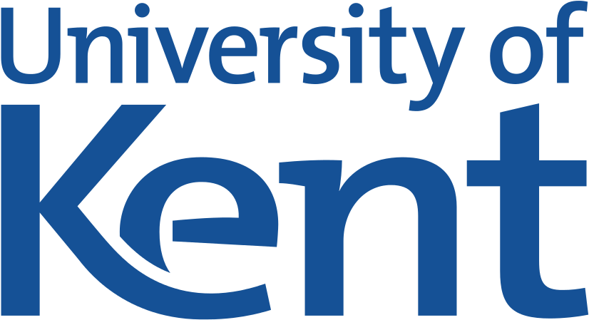

| Home | Accommodation | Program | Directions | Booklet | Posters |
This conference will be an in person event based at the University of Kent in Canterbury. The theme of the conference is intentionally broad, focussing on topological solitons and their applications in physics. We welcome any talks within this loose brief.
While we will be making the talks available online through the solitons at work network, all speakers will be in person. This is due to the numerous years without in person interaction due to the pandemic. We look forward to welcoming you to the university and seeing some faces we haven't seen in some time.
All talks will be held in the Cornwallis East building, room SR1 on the ground floor. Additional information is available through the above links or the conference booklet that contains everything you need to know in one place [here].
To register for the event just drop me an email at t.winyard@kent.ac.uk. I also recommend volunteering to do a poster.
| Steffen Krusch | Chris Halcrow | Thomas Winyard |
|---|---|---|
| James Bradshaw | Jack McKenna | Morgan Rees |
We would like to thank the London Mathematical Society (LMS) for funding this meeting. We would also like to thank the University of Kent for hosting the event. Finally, we would like to thank the solitons at work network for advertising the event, as well as keeping the topological solitons field active during the pandemic. We recommend signing up to the solitons at work mailing list, by clicking the logo below, to hear about future conferences and seminars.
|  |
|
|